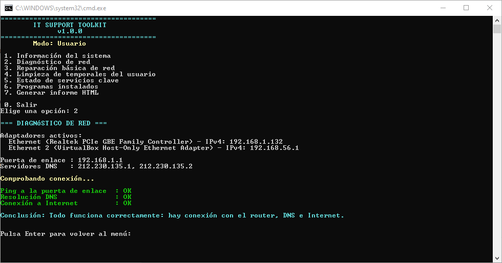

Sistemas
Windows 10/11, Ubuntu Server, instalación, configuración, usuarios, permisos y mantenimiento básico.
Estudiante de Grado Medio en Sistemas Microinformáticos y Redes (SMR), con experiencia diaria en el manejo de sistemas informatizados y control de procesos en entorno industrial. Acostumbrado a detectar incidencias, coordinar equipos y mantener la continuidad operativa. Formación práctica en Windows, Linux, redes, hardware y servicios web. Busco mi primera oportunidad profesional en soporte IT remoto, Help Desk o Service Desk N1.
Windows 10/11, Ubuntu Server, instalación, configuración, usuarios, permisos y mantenimiento básico.
TCP/IP, direccionamiento IP, DHCP, DNS, Wi-Fi, routers, VLAN, Cisco Packet Tracer y acceso remoto.
Diagnóstico de incidencias, hardware, periféricos, ofimática, documentación y atención al usuario.
Python básico, Nginx, PHP, MySQL, SMB/CIFS, DDNS y administración web básica.

Herramienta en PowerShell para soporte N1 en Windows: diagnóstico del sistema y de la red con conclusión en lenguaje claro, reparaciones básicas con confirmación, limpieza de temporales, gestión de la cola de impresión, inventario de software e informes HTML anonimizables.
Aplicación de escritorio para Windows en Python que crea copias de seguridad verificadas con SHA-256, conserva versiones anteriores, muestra un diagnóstico básico del sistema y genera informes HTML.
Proyecto final del ciclo SMR: análisis y propuesta de mejora de red, seguridad, copias de respaldo, inventario y plan de contingencia IT en un entorno industrial real.
Experiencia previa en industria alimentaria, construcción y agricultura (2015 – 2022).